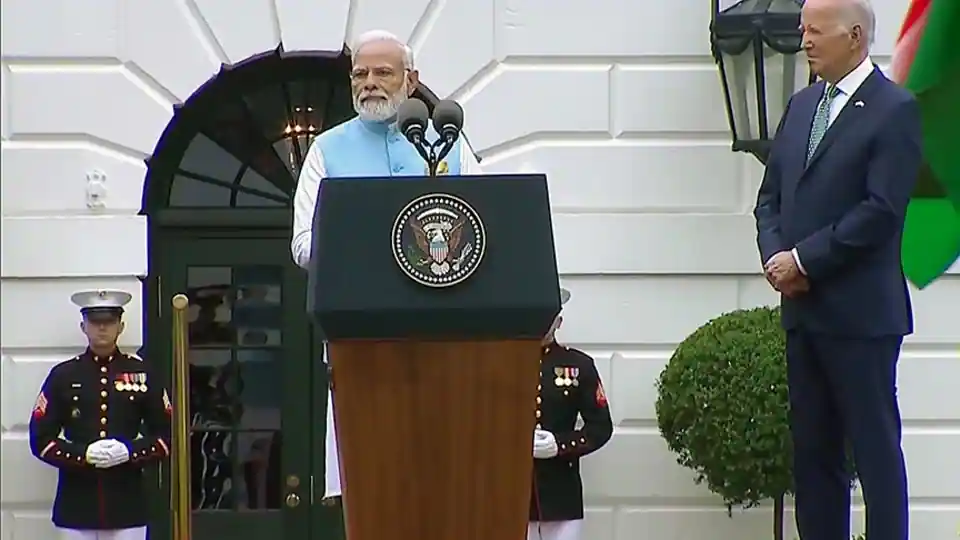
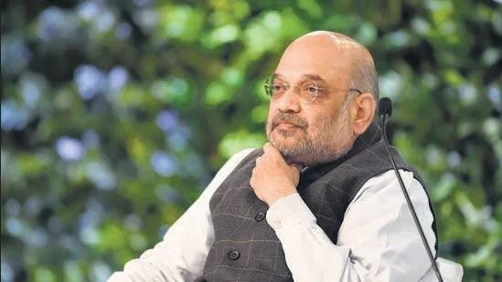
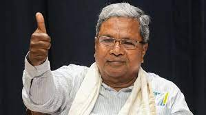

PTI | | Posted by Yamini C S
Jun 23, 2023 03:45 PM IST
Prime Minister Narendra Modi on Thursday arrived at the White House to a ceremonial welcome hosted by President Joe Biden and First Lady Jill Biden. PM Modi will also have a one-on-one meeting with President Biden to further boost India-US strategic ties. (ANI)
PM Modi and President Biden started their bilateral talks on Thursday at the White House aimed at further boosting the growing Indo-US strategic relations in areas like defence, space, clean energy and critical technologies. (ANI
The two leaders will discuss ways to further expand educational exchanges and people-to-people ties, as well as work together to confront common challenges from climate change to workforce development and health security, according to the White House. (ANI)
US First Lady Jill Biden and PM Modi visited the National Science Foundation in Alexandria, Virginia and attended the event.
PTI | | Posted by Yamini C S
Jun 23, 2023 03:45 PM IST
Union home minister Amit Shah on Friday dismissed the meeting of non-Bharatiya Janata Party (BJP) parties in Patna for unity ahead of the 2024 national polls as a “photo session” and said Narendra Modi will become the Prime Minister for a third time despite their best efforts. He said the BJP will get over 300 of 543 seats in Lok Sabha while laughing off attempts for unity to defeat BJP.
PTI | | Posted by Yamini C S
Jun 23, 2023 03:45 PM IST
Karnataka Chief Minister Siddaramaiah will be felicitated in Maharashtra by the state's Pradesh Congress Committee as well as ally NCP on Sunday, to mark the massive victory of the Congress in last month's Assembly elections. According to the itinerary released by the Chief Minister's office, Siddaramaiah will fly from here to Kolhapur, from where he would drive to Sangli by road to attend a programme organised by the Maharashtra Pradesh Congress Committee.
This would be Siddaramaiah's maiden visit to Maharashtra after becoming the Chief Minister for the second time. He would then fly to Baramati -- on invitation of Nationalist Congress Party (NCP) chief Sharad Pawar -- to attend a function on the birth anniversary of 18th century Maratha queen Ahilyadevi Holkar organised by Punyashlok Ahilyadevi Holkar Vikas Pratishthan, where he would also be felicitated, sources close to the Karnataka chief minister said.
Pawar wrote to Siddaramaiah on June 9 inviting him to Baramati -- the NCP leader's home turf in Pune district -- saying the people of Maharashtra would like to felicitate him. Pawar said the Karnataka Assembly elections have demonstrated the strength of "secular forces" and have again paved the way for a change in the political dynamics of the nation.
According to Pawar, the Dhangar community, which has consistently supported him throughout his political career, has taken the initiative to invite and felicitate Siddaramaiah. Leaders of the community wished to felicitate Siddaramaiah on the occasion of Ahilyadevi Holkar's birth anniversary. “I do personally invite you on behalf of the community and the people of Maharashtra,” Pawar added.In the May 10 Karnataka elections, the Congress ousted the BJP from power, winning 135 seats in the 224-member Assembly. BJP got just 66 seats and the Janata Dal (Secular) headed by former Prime Minister H D Deve Gowda managed only 19.